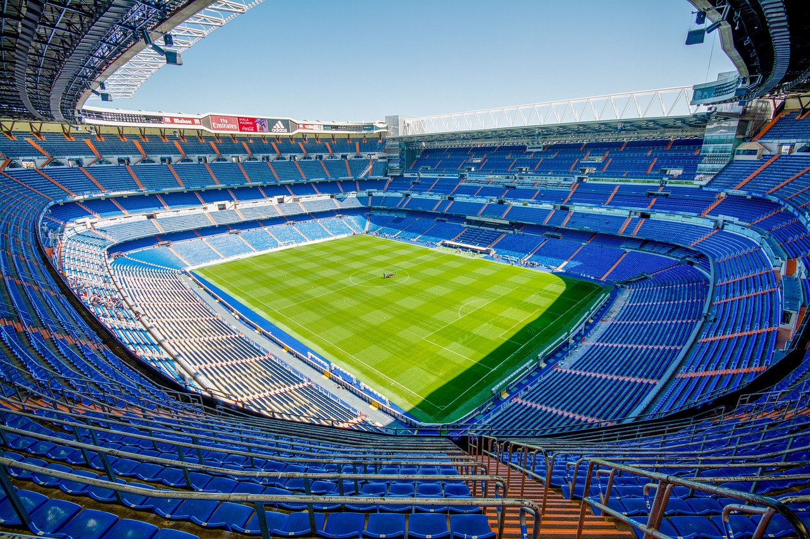

Imam 20 godina i iz Zaprešića sam.
Osnovnu i srednju školu sam zaršio također u Zaprešiću.
Išao sam u srednju školu ban Josip Jelačić, smjer tehničar za računalstvo.
Tijek srednje škole počeo sam se zanimati za dizajn i kreiranje web stranica i to je bio jedan od razloga zašto sam upisao ovaj faks.
U slobodno vrijeme bavim se nogometom. Treniram ga odmmalena.
| Nogomet | Multimedij |
|---|---|
|  | |
|